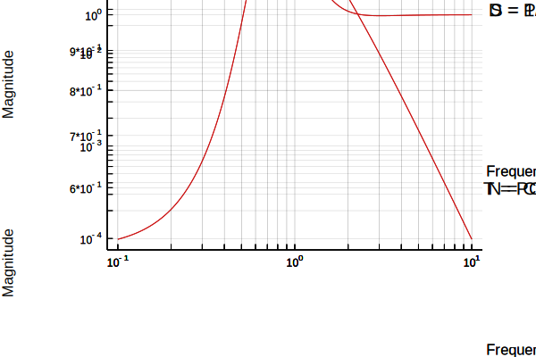

PID design functions
By plotting the gang of four under unit feedback for the process
P = tf(1,[1,1])^4
gangoffourplot(P,tf(1))

we notice that the sensitivity function is a bit too high at around frequencies ω = 0.8 rad/s. Since we want to control the process using a simple PI-controller, we utilize the function loopshapingPI and tell it that we want 60 degrees phase margin at this frequency. The resulting gang of four is plotted for both the constructed controller and for unit feedback.
ωp = 0.8
kp,ki,C = loopshapingPI(P,ωp,phasemargin=60, doplot=true)
Advanced pole-zero placement
This example illustrates how we can perform advanced pole-zero placement. The task is to make the process a bit faster and damp the poorly damped poles.
Define the process
ζ = 0.2
ω = 1
B = [1]
A = [1, 2ζ*ω, ω^2]
P = tf(B,A)
# output
TransferFunction:
1.0
----------------
s^2 + 0.4s + 1.0
Continuous-time transfer function model
Define the desired closed loop response, calculate the controller polynomials and simulate the closed-loop system
ζ0 = 0.7
ω0 = 2
Am = [1, 2ζ0*ω0, ω0^2]
Ao = conv(2Am, [1/2, 1]) # Observer polynomial
AR = [1,0] # Force the controller to contain an integrator
B⁺ = [1] # The process numerator polynomial can be facored as B = B⁺B⁻ where B⁻ contains the zeros we do not want to cancel (non-minimum phase and poorly damped zeros)
B⁻ = [1]
Bm = conv(B⁺, B⁻) # In this case, keep the entire numerator polynomial of the process
R,S,T = rstc(B⁺,B⁻,A,bm,Am,Ao,AR) # Calculate the 2-DOF controller polynomials
Gcl = tf(conv(B,T),zpconv(A,R,B,S)) # Form the closed loop polynomial from reference to output
stepplot([P,Gcl]) # Visualize the open and closed loop responses.
gangoffourplot(P, tf(-S,R)) # Plot the gang of four to check that all tranfer functions are OK
Stability boundary for PID controllers
The stability boundary, where the transfer function P(s)C(s) = -1, can be plotted with the command stabregionPID. The process can be given in string form or as a regular LTIsystem.
P1 = "exp(-sqrt(s))"
f1 = stabregionPID(P1,logspace(-5,1,1000))
P2 = "100*(s+6).^2./(s.*(s+1).^2.*(s+50).^2)"
f2 = stabregionPID(P2,logspace(-5,2,1000))
P3 = tf(1,[1,1])^4
f3 = stabregionPID(P3,logspace(-5,0,1000))